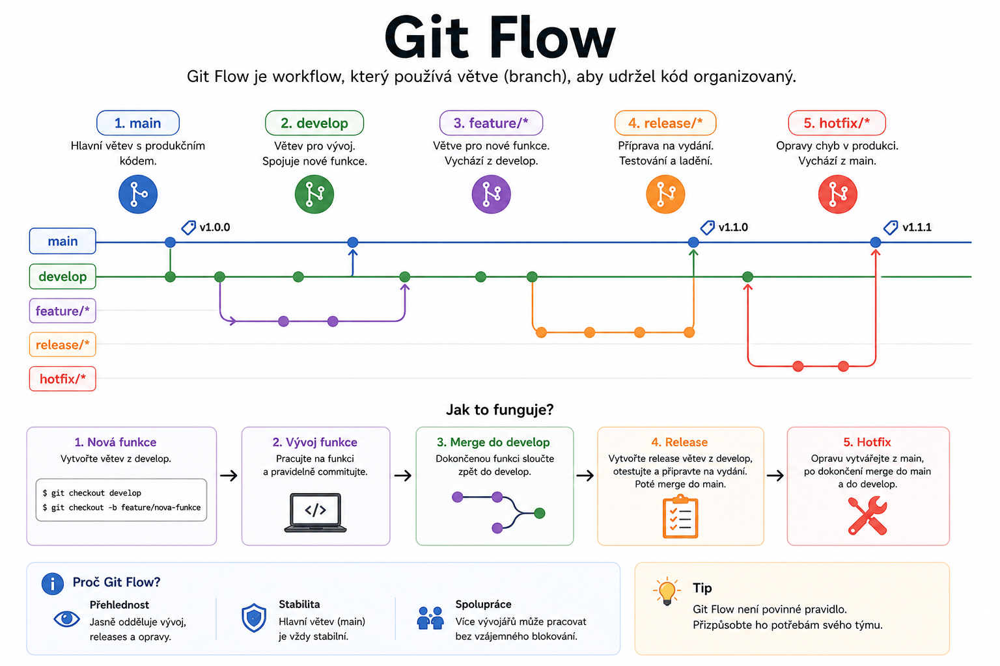

Git Flow – Strategie větvení & workflow
Praktické rady pro efektivní správu větví v týmu pomocí Git Flow.

Co je Git Flow?
- Git Flow je osvědčená strategie pro řízení verzí a vývoj v týmech.
- Umožňuje jasně oddělit vývoj, přípravu vydání a opravy chyb.
Hlavní větve
Základní větve
main(nebomaster): Produkční verze kódudevelop: Připravované změny pro další vydání
Pomocné větve
feature/*: Vývoj nových funkcírelease/*: Příprava vydáníhotfix/*: Rychlé opravy v produkci
Typické workflow
Vývoj nové funkce
git checkout develop
git checkout -b feature/nova-funkce
# Vývoj...
git checkout develop
git merge feature/nova-funkce
Note
Vždy vytvářejte feature větve z aktuální develop větve.
Příprava vydání
git checkout develop
git checkout -b release/1.0.0
# Finalizace...
git checkout main
git merge release/1.0.0
git checkout develop
git merge release/1.0.0
git tag -a v1.0.0 -m "Verze 1.0.0"
Tip
V release větvích provádějte pouze opravy chyb, úpravy dokumentace a metadat.
Oprava chyby v produkci
git checkout main
git checkout -b hotfix/oprava-chyby
# Oprava...
git checkout main
git merge hotfix/oprava-chyby
git tag -a v1.0.1 -m "Oprava 1.0.1"
git checkout develop
git merge hotfix/oprava-chyby
Important
Hotfixy vždy slučujte do main i develop!
Pravidla pro práci s Git Flow
Doporučené postupy
- Nikdy nepracujte přímo v
mainanidevelop - Každá funkce má vlastní feature větev
- Před sloučením proveďte code review
- Po sloučení release/hotfix větve označte verzi pomocí tagu
- Používejte smysluplné názvy větví (např.
feature/user-auth) - Udržujte commit zprávy jasné a popisné
Vizualizace workflow
Schéma větvení
main ●────────●─────────●────────●
\ \ \ \
develop ●─────●───●─────●───●───●────●
\ / / /
feature ●───● / /
/ /
release ●─────●
/
hotfix ●